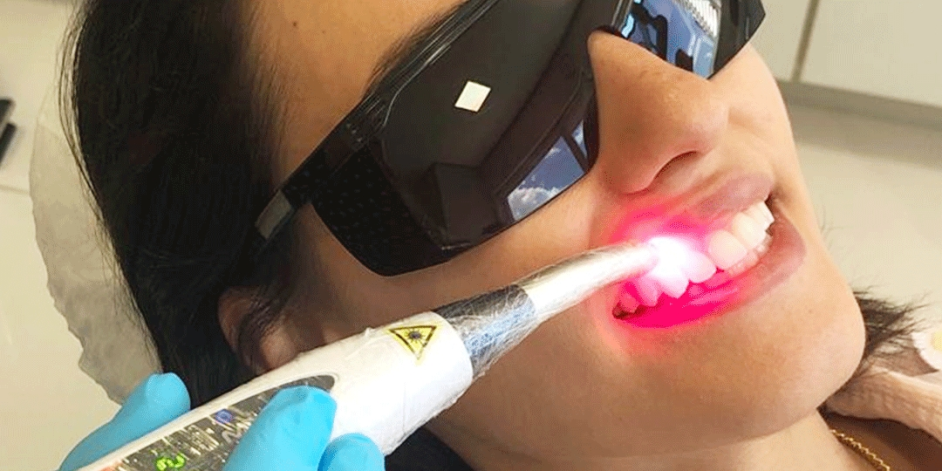
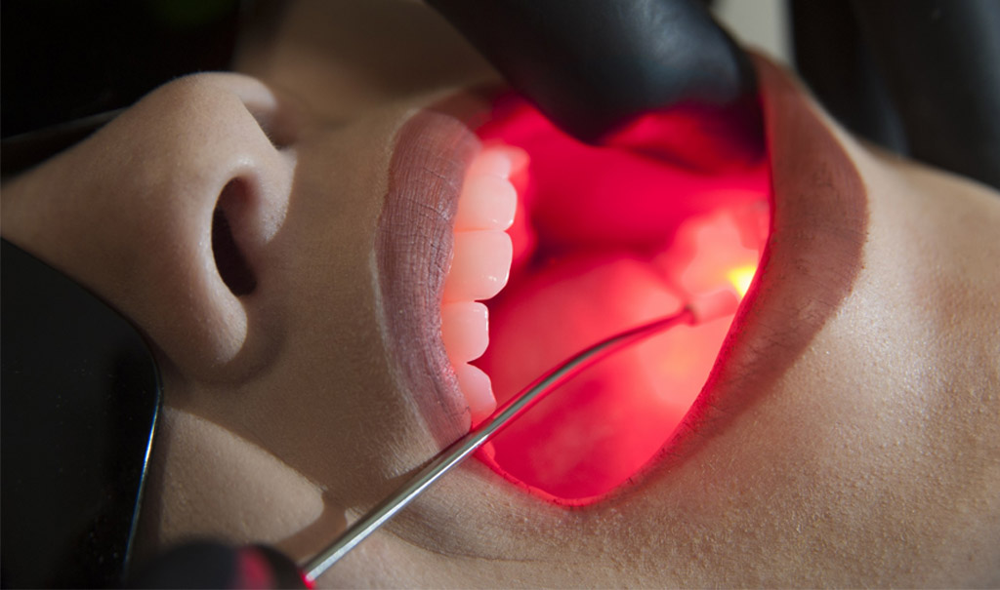

Utilizamos a fotobiomodulação para proporcionar um pós-operatório muito mais confortável e rápido. A tecnologia a favor do seu bem-estar imediato.

Recuperação
Pós-operatório Ágil

O laser terapêutico, ou fotobiomodulação, é uma tecnologia indolor que utiliza comprimentos de onda específicos para estimular as células a se regenerarem mais rápido. É um verdadeiro "acelerador" de saúde para tecidos da boca.
Ideal para casos de aftas, herpes, sensibilidade dentária e, principalmente, no pós-operatório de cirurgias. Ele reduz a necessidade de analgésicos e proporciona um alívio imediato da dor.